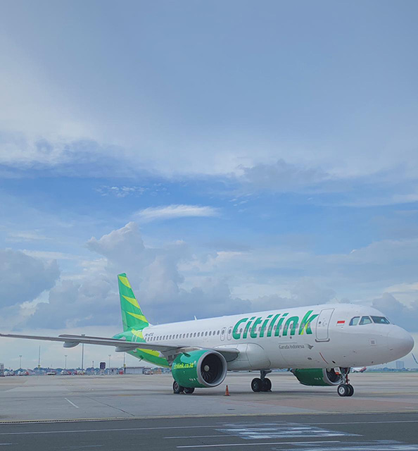
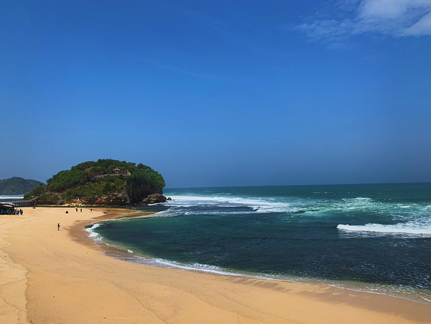
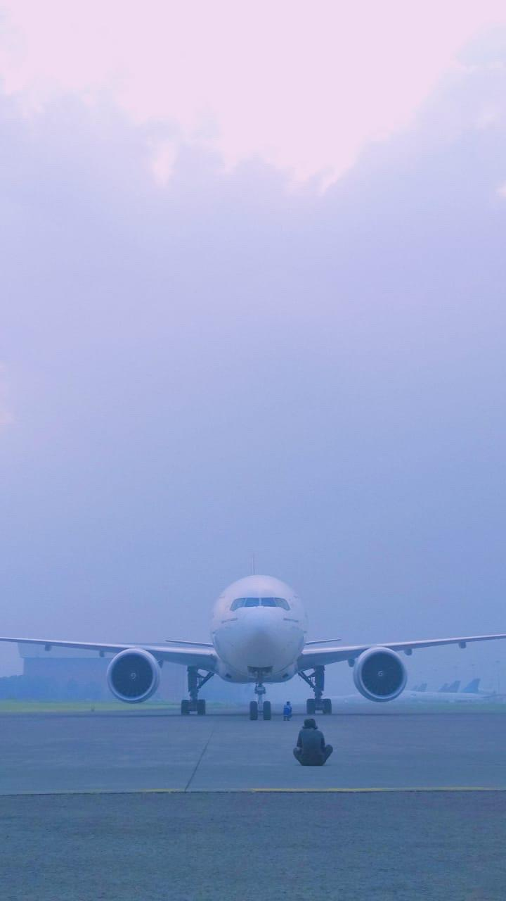
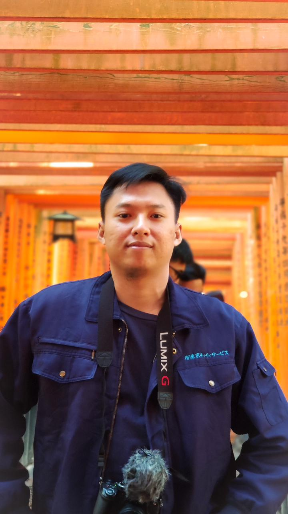
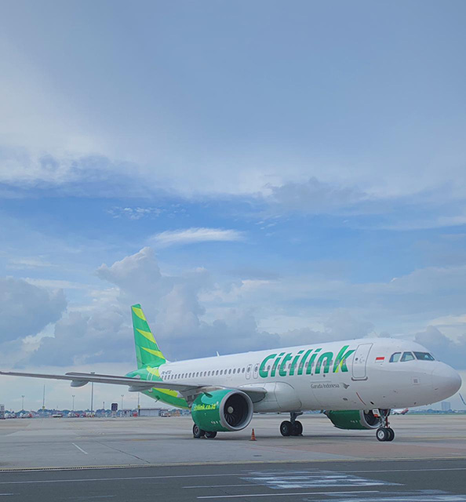
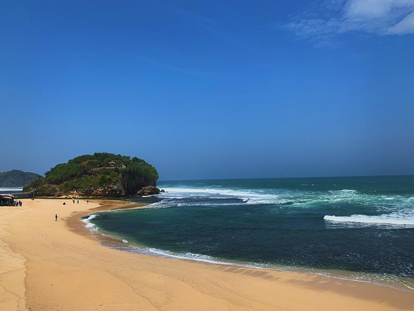
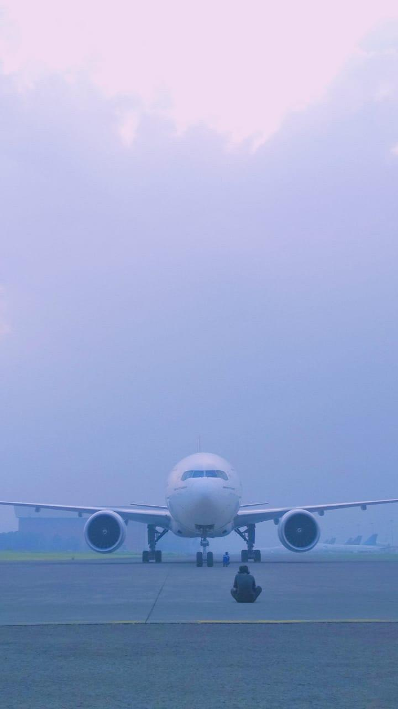
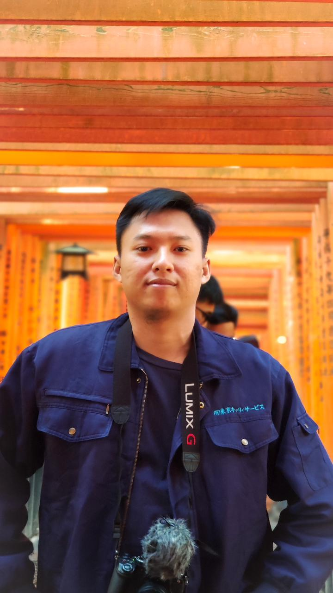

Supriyanto
Maulana
an Aircraft mechanic and front end developer
an Aircraft mechanic and front end developer
At GMF from 2017 until now i perform scheduled and unscheduled maintenance tasks on various types of aircraft, including inspections, repairs, and troubleshooting.
Ensure that all maintenance activities comply with relevant aviation authority (DGCA) regulations and standards.
Maintain accurate records of maintenance and repair work, including logbooks, work orders, and service reports.
Prioritize safety at all times by following established safety procedures and protocols.
Work closely with other maintenance personnel, including avionics technicians and inspectors, to complete maintenance tasks efficiently.
Stay current with industry trends, new technologies, and regulations through ongoing training and professional development.
at 2010 i start study as student at smk negri 1 place in tanjung pinang city riau island state, i study as computer and network technique student i learn about how computer works, create web with joomla and html, build simply network lan also wireless network and create web server for my final exam. It was beuatiful memories there i have good friends there too good to remember the memories then graduate at 2013
at 2014 i start study at university of suryadarma as diploma aeronautical engineering student, Aeronautical students typically pursue formal education in aerospace engineering, aeronautical engineering, or a related field. This often involves earning a bachelor's degree, followed by advanced degrees for those who wish to specialize or conduct research in specific areas of aeronautics
2021 i continue my study as computer science student at Binus Online Learning i dedicated and intellectually curious individual who is on a quest to master the intricate world of computers, software, and digital technologies. These students have a strong passion for problem-solving, logical thinking, and innovation, and they are committed to acquiring the knowledge and skills required to navigate and shape our increasingly technology-driven world. I also take some course of front end developer at code academy graduate at 2023 with 3.4 gpa.
 






